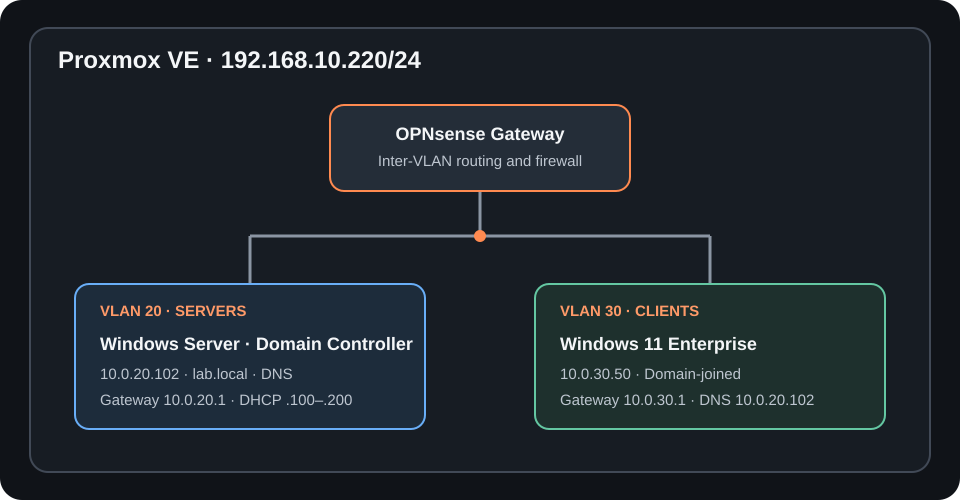

Building an Enterprise-Grade Active Directory & Telemetry Lab on Proxmox VE
A dedicated homelab is a practical way to learn enterprise systems administration, network segmentation, and defensive security monitoring. I built this environment on Proxmox VE with an OPNsense firewall, a Windows Server domain controller, and a Windows 11 Enterprise workstation on separate networks.
The project ties together the fundamentals: route isolated subnets, make clients find domain services through DNS, organize computers and users in Active Directory, apply workstation policy, and collect endpoint events with Microsoft Sysmon.

- Proxmox VE host:
192.168.10.220/24 - VLAN 20 server network:
10.0.20.0/24, gateway10.0.20.1 - Windows Server domain controller:
10.0.20.102, domainlab.local - VLAN 30 client network:
10.0.30.0/24, gateway10.0.30.1 - Windows 11 client:
10.0.30.50, using the domain controller for DNS
1. Segmenting the virtual network
I used OPNsense as the virtual firewall and gateway for two separate networks. VLAN 20 is for servers, and VLAN 30 is for clients. Each network has its own gateway and DHCP scope, with dynamic addresses from .100 through .200.
- VLAN 20:
10.0.20.0/24, gateway10.0.20.1, DHCP pool10.0.20.100–10.0.20.200. - VLAN 30:
10.0.30.0/24, gateway10.0.30.1, DHCP pool10.0.30.100–10.0.30.200.
The domain controller uses a static address outside the server pool, and I assigned the Windows client 10.0.30.50, outside the client pool. I added firewall rules for the traffic needed to test and use domain services across the VLAN boundary. In a segmented lab, it is better to allow only the required traffic than to treat inter-VLAN routing as unrestricted access.
2. Installing Active Directory and getting DNS right
I configured Windows Server with the static address 10.0.20.102/24, then promoted it to a domain controller for lab.local with integrated DNS. On the domain controller, I verified the domain name with:
(Get-ADDomain).DNSRootThe first cross-subnet lookup exposed a DNS registration issue: nslookup lab.local returned an address on another server interface, 192.168.50.10, instead of the domain controller's server-network address. In DNS Manager, I corrected the zone's host (A) record to 10.0.20.102, then cleared the DNS server cache and re-registered the DNS client:
Clear-DnsServerCache
Register-DnsClientThis was a good reminder that a multihomed server can publish an address clients cannot use. I verified the record from the client network before moving on; when a server has multiple interfaces, its DNS registration settings and the records it publishes should also be reviewed.
3. Joining the Windows 11 client
The workstation is on VLAN 30 with address 10.0.30.50/24, gateway 10.0.30.1, and preferred DNS server 10.0.20.102. Pointing the client at the domain controller for DNS is essential: domain discovery depends on the AD DNS records, not just general internet name resolution.
After confirming reachability and that lab.local resolved to 10.0.20.102, I joined the workstation to the domain from an elevated PowerShell session:
Test-Connection 10.0.20.102
Resolve-DnsName lab.local
Add-Computer -DomainName "lab.local" -Credential (Get-Credential "lab\Administrator") -RestartUsing Get-Credential prompts for the password rather than putting it in the command itself. I checked the DNS result first so a failed join would not be confused with a name-resolution problem.
4. Organizing accounts and targeting Group Policy
I created an Enterprise organizational unit with separate child OUs for workstations, users, and service accounts. After the join, I moved the computer object from the default Computers container into Enterprise → Workstations.
lab.local
└── Enterprise
├── Workstations
├── Users
└── Service AccountsIn Group Policy Management, I created a Workstation-Security-Baseline GPO and linked it to the Workstations OU for computer-scoped workstation settings. I then refreshed policy on the client:
gpupdate /forcePolicy scope matters: a GPO linked to the Workstations OU is appropriate for computer settings targeted at those machines, but domain account password requirements should be configured at the domain level or with fine-grained password policies. I treat those as separate policy decisions and verify that settings apply to the intended accounts and computers.
5. Capturing endpoint telemetry with Sysmon
To make activity on the Windows workstation observable, I installed Microsoft Sysmon from Sysinternals and used a baseline XML configuration. Sysmon runs as a service and records detailed system activity according to the selected configuration.
After extracting the tools and configuration into C:\Tools\Sysmon\, I installed it from an elevated PowerShell prompt:
Set-Location C:\Tools\Sysmon
.\Sysmon64.exe -i sysmonconfig.xmlI verified events in Event Viewer under Applications and Services Logs → Microsoft → Windows → Sysmon → Operational. A useful next step is to review the configuration and generated events together: collecting more data is not automatically better if the signal is difficult to interpret or creates unnecessary volume.
What this lab makes possible
This build brought together isolated server and client networks, an Active Directory domain with working cross-subnet DNS, a logical OU structure, a workstation GPO, and endpoint telemetry. Each layer can now be tested independently when something does not work: routing and firewall access, DNS, domain membership, policy application, or event generation.
Next, I plan to centralize the Sysmon data with a Wazuh agent and use authorized, isolated simulations to evaluate what the telemetry detects. That will turn the workstation's local event log into a starting point for broader monitoring and detection practice.
For the broader virtualization and network layout, see the homelab project page and my post on building a segmented Proxmox homelab.